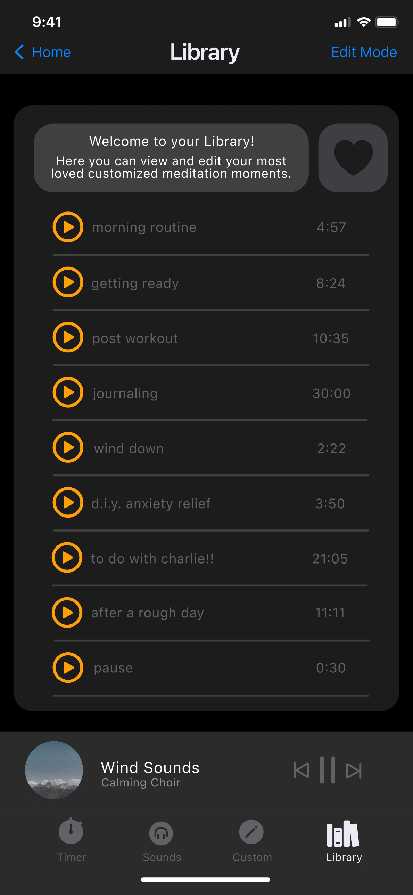
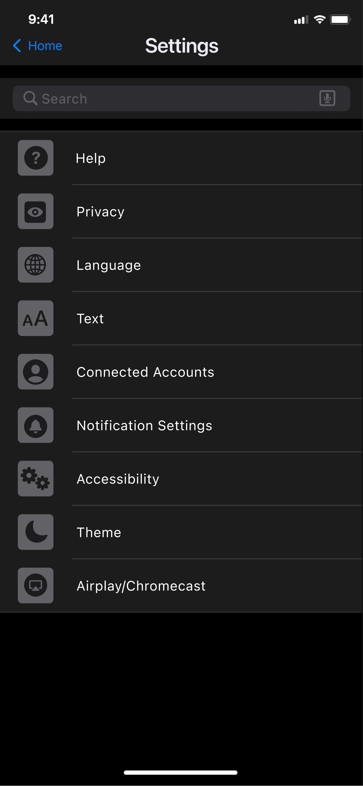

Welcome!
Portfolio Projects:
UX Design example: Timed Meditation Screen
Interested in learning more about this project? Click here for a look into the design process with my team




Data Tracking Infographic
This was for a class project, where I collected data and visualized it in an infogrpahic format.

Low Fidelity Prototyping
This is an example of a low-fidelity prototype for an app I designed.